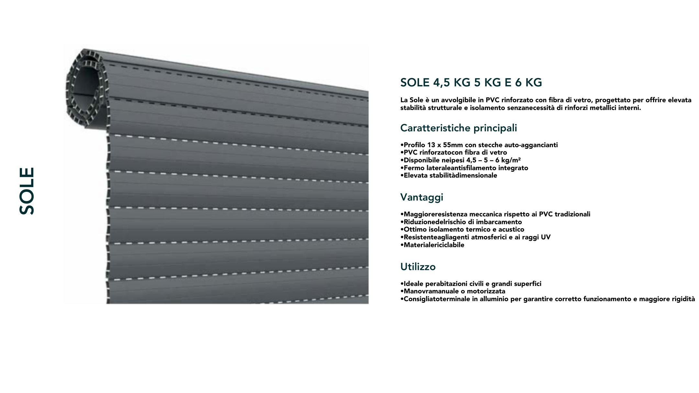

Avvolgibili
SOLE 4 5 5 6 KG
MODELLO: SOLE_4_5_5_6_KG PAGINA PDF: 185
TESTO PDF: SOLE •Profilo 13 x 55mm con stecche auto-aggancianti •PVC rinforzatocon fibra di vetro •Disponibile neipesi 4,5 – 5 – 6 kg/m² •Fermo lateraleantisfilamento integrato •Elevata stabilitàdimensionale •Maggioreresistenza meccanica rispetto ai PVC tradizionali •Riduzionedelrischio di imbarcamento •Ottimo isolamento termico e acustico •Resistenteagliagenti atmosferici e ai raggi UV •Materialericiclabile La Sole è un avvolgibile in PVC rinforzato con fibra di vetro, progettato per offrire elevata stabilità strutturale e isolamento senzanecessità di rinforzi metallici interni. •Ideale perabitazioni civili e grandi superfici •Manovramanuale o motorizzata •Consigliatoterminale in alluminio per garantire corretto funzionamento e maggiore rigidità SOLE 4,5 KG 5 KG E 6 KG Utilizzo Vantaggi Caratteristiche principali